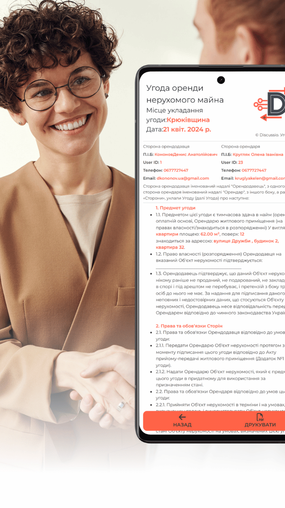

<div [@top3] class="container-info">

  <div class="info-content">

    <div class="img-wrapper">
      
      <div class="blure"></div>
    </div>

    <div class="info-wrapper">
      <div class="info">
        <i class="fa-solid fa-handshake-simple"></i>
        <p class="t-lar-x bold mb-2">Угоди Оселі</p>
        <h1 class="t-c">Створення угод оренди житла</h1>
        <h2 class="t-med bold mb-2 t-c">Наша платформа дозволяє легко та швидко створювати угоди між орендарем та
          орендодавцем всього за кілька кліків.</h2>
        <a class="b-primary mi-wi-250 m-2 jc-se" [routerLinkActive]="'active'" [routerLink]="'/house/agree/step'">
          <i class="fa-solid fa-shoe-prints"></i>
          <div class="flex-column pl-2 t-e">
            <p class="t-med white">Пояснення</p>
            <p class="t-min white">Як створити угоду</p>
          </div>
        </a>

        <p class="t-med t-c"> Для створення угоди необхідно обрати орендаря із списку дискусій або мешканців та
          заповнити форму.</p>
        <button (click)="goToAgreeCreate()" class="b-primary mi-wi-250 m-2 jc-se">
          <i class="fa-solid fa-feather-pointed"></i>
          <div class="flex-column pl-2 t-e">
            <p class="t-med white">Створити</p>
            <p class="t-min white">Угоду оренди</p>
          </div>
        </button>

        <p class="t-med t-c"> Після створення угоди орендодавцем, вона направляється орендарю для розгляду та
          погодження, щоб він міг докладно з нею ознайомитись та прийняти рішення.</p>
        <a class="b-primary mi-wi-250 m-2 jc-se" [routerLinkActive]="'active'" [routerLink]="'/house/agree/rewiew'">
          <i class="fa-solid fa-hourglass-half"></i>
          <div class="flex-column pl-2 t-e">
            <p class="t-med white">Запропоновані</p>
            <p class="t-min white">Угоди які ви запропонували</p>
          </div>
        </a>
        <p class="t-med t-c">Після погодження умов угоди вона залишиться у вашому профілі де її
          можна буде легко роздрукувати та підписати на місці.
        </p>

        <a class="b-primary mi-wi-250 m-2 jc-se" [routerLinkActive]="'active'" [routerLink]="'/house/agree/concluded'">
          <i class="fa-solid fa-file-circle-check"></i>
          <div class="flex-column pl-2 t-e">
            <p class="t-med white">Ухвалені Угоди</p>
            <p class="t-min white">Угоди які були підтверджені</p>
          </div>
        </a>

        <a class="t-c p-3" [routerLink]="'/feedback'" [queryParams]="{ category: 'Угоди' }">
          <div class="t-med bold mr-2 accent">Є ідея як зробити краще? <i class="fa-regular fa-lightbulb accent"></i>
          </div>
        </a>
      </div>
      <app-footer></app-footer>
    </div>
  </div>

</div>
